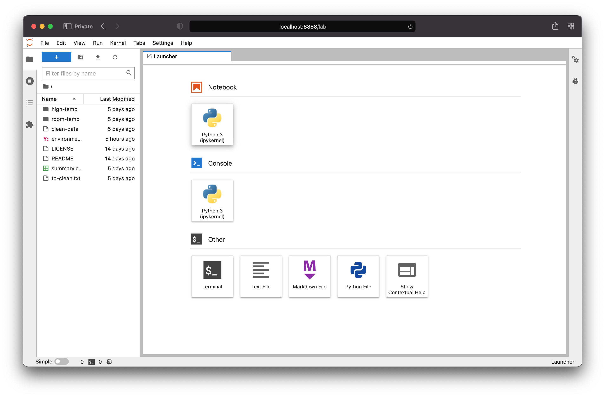
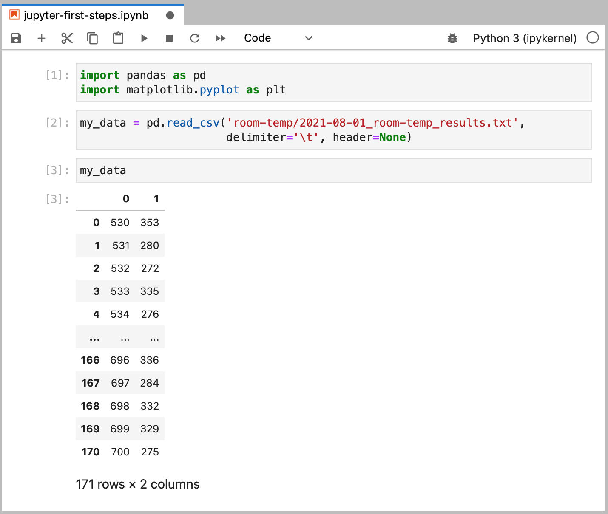
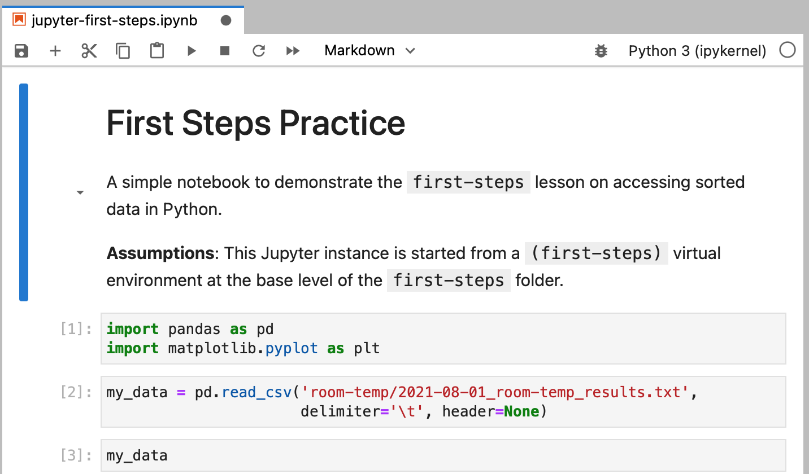
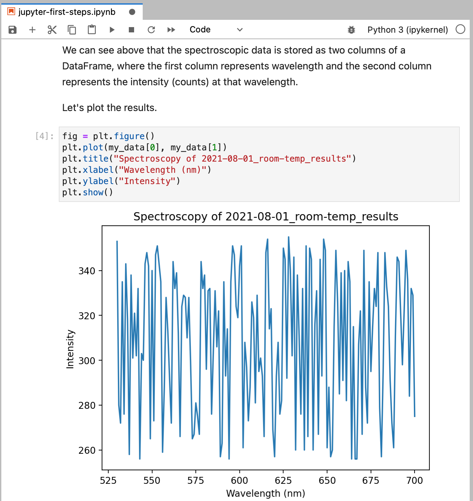
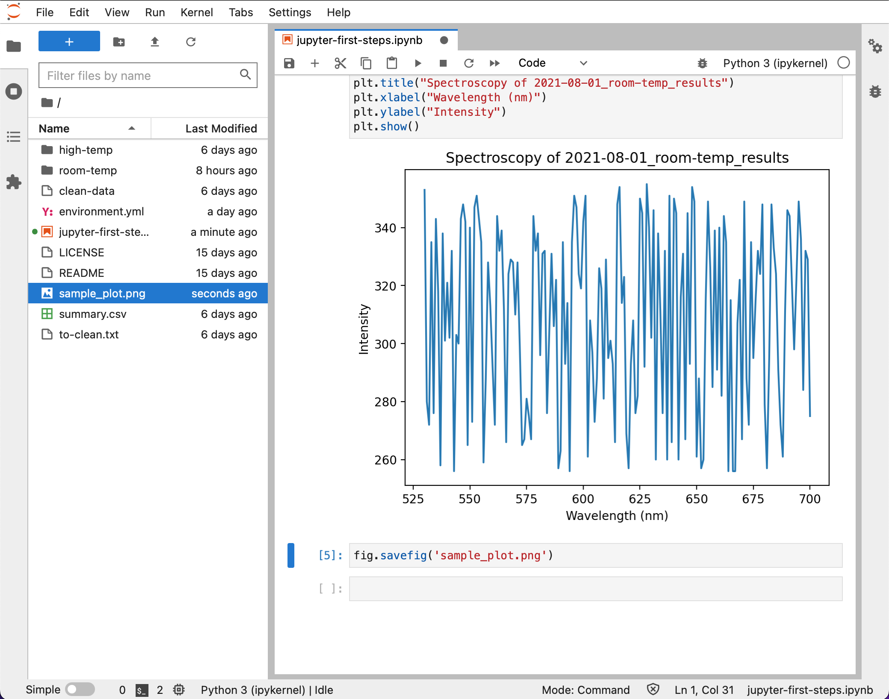
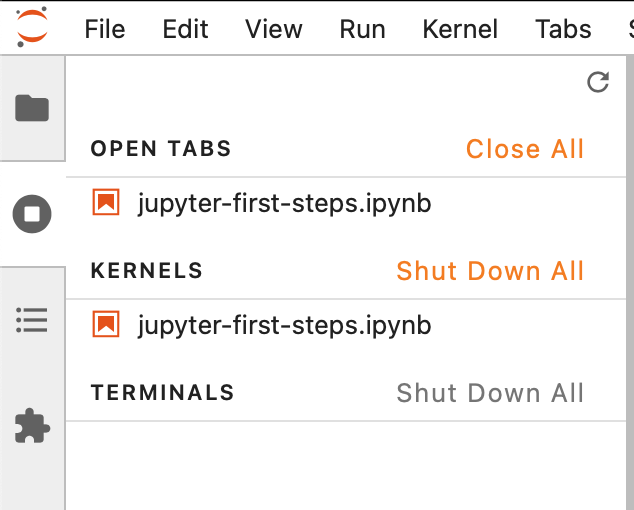
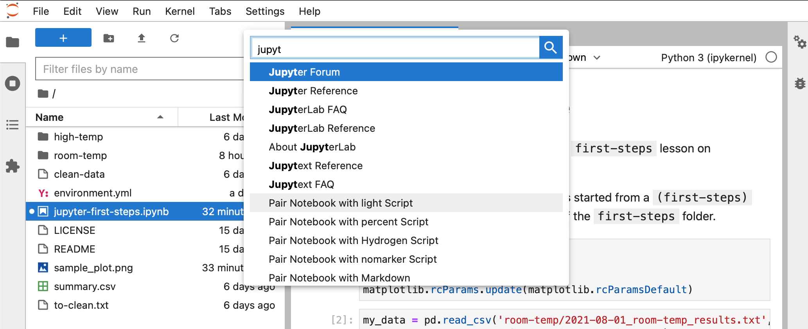
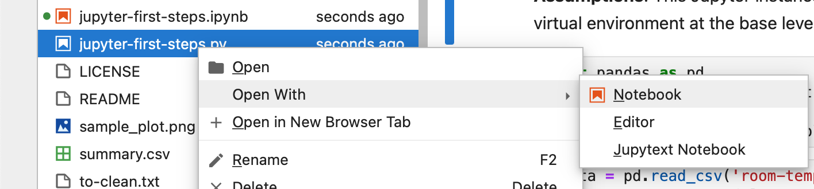

First Steps with Python#
Prerequisites
Conda package manager (part of Anaconda or Miniconda)
Optional Prerequisites
Jupyter Notebook / Jupyter Lab
Exercism Python track: first 14 learning exercises
Objectives
Plot data from a file
Use a Jupyter Notebook
Write a Python script
Now that we’ve sorted and organized our dummy data from the previous First Steps lessons, we’d like to visualize it.
Setting up a Python environment#
We’ve already taken steps to prepare our first-steps folder for public
appearance by giving it a LICENCE and README. We’ve also started recording
its evolution with Git. Finally, we need to ensure that future collaborators
have the same working set of assumptions about the code that may be executed.
These assumptions are declared as dependencies, and it is good practice to
isolate these requirements for each project. We isolate with the use of virtual
environments and document the packages in an environment.yml file.
After you’ve installed Conda (through Anaconda or Miniconda) and run conda init to activate it on your system, you might notice your terminal has a few
extra characters to the left of the prompt. It probably reads something like
this:
(base) ~/Computing-Essentials $
Windows
GitBash does not handle Conda activation. For this lesson, you may use AnacondaPrompt (installed with Anaconda), WSL/WSL2, or Windows Terminal.
The name to the left indicates that your currently active Conda virtual
environment is the default environment (base) to which any packages will be
installed.
Conda makes setting up and initializing new virtual environments in Python relatively simple. Create environments with:
conda create --name env_name
Activate existing environments with:
conda activate env_name
We’ll pick an environment name that is the same as our folder name. Consider abbreviating long names, as this name will show up in your prompt after activation.
(base) ~/Computing-Essentials/first-steps $ conda create --name first-steps
Collecting package metadata (current_repodata.json): done
Solving environment: done
## Package Plan ##
environment location: /opt/anaconda3/envs/first-steps
Proceed ([y]/n)? y
Preparing transaction: done
Verifying transaction: done
Executing transaction: done
#
# To activate this environment, use
#
# $ conda activate first-steps
#
# To deactivate an active environment, use
#
# $ conda deactivate
(base) ~/Computing-Essentials/first-steps $ conda activate first-steps
(first-steps) ~/Computing-Essentials/first-steps $
Notice that after successful activation, the beginning of the prompt changed
from (base) to (first-steps).
To deactivate the current environment, you can run conda deactivate from your
terminal, or you may close your terminal session. When you open up a new
terminal, it will revert to the default (base) environment.
Installing Packages#
Our first-steps environment currently has no packages installed, not even
python. We’ll need a few plotting tools on top of the base distribution of
Python. We can install multiple packages with Conda into our existing
environment.
(first-steps) ~/Computing-Essentials/first-steps $ conda install python matplotlib pandas
These packages will also install any required dependencies. We can list every
package that was installed with the conda list command.
(first-steps) ~/Computing-Essentials/first-steps $ conda list
# packages in environment at /opt/anaconda3/envs/first-steps:
#
# Name Version Build Channel
⋮
matplotlib 3.5.1 py310hecd8cb5_1
matplotlib-base 3.5.1 py310hfb0c5b7_1
numpy 1.22.3 py310hdcd3fac_0
numpy-base 1.22.3 py310hfd2de13_0
⋮
pandas 1.4.2 py310he9d5cce_0
⋮
pip 21.2.4 py310hecd8cb5_0
⋮
python 3.10.4 hdfd78df_0
⋮
In our above conda install command, no specific version of any package was
specified, so the latest package was installed by default. In this case, the
latest available Python package was a flavor of version 3.10.
If we wanted to specify a different version of Python, we could do so by
specifying the version at install: conda install python=3.6 ...
Replicating Environments#
We can now communicate to others which versions of each package we have
installed. We can list these packages into a machine-readable environment.yml
file using the following command.
(first-steps) ~/Computing-Essentials/first-steps $ conda env export > environment.yml
If we open the newly-created file, we’ll see similar information to the output
of our conda list command.
name: first-steps
channels:
- defaults
dependencies:
- ⋮
- matplotlib=3.5.1=py310hecd8cb5_1
- matplotlib-base=3.5.1=py310hfb0c5b7_1
⋮
- numpy=1.22.3=py310hdcd3fac_0
- numpy-base=1.22.3=py310hfd2de13_0
⋮
- pandas=1.4.2=py310he9d5cce_0
⋮
- pip=21.2.4=py310hecd8cb5_0
⋮
- python=3.10.4=hdfd78df_0
- python-dateutil=2.8.2=pyhd3eb1b0_0
⋮
prefix: /opt/anaconda3/envs/first-steps
Now when we distribute this folder to colleagues, we can have them install all of the required packages at once by specifying the environment file upon creation, which has the environment name, channels, dependencies, and prefix specified.
(base) ~/Computing-Essentials/first-steps $ conda create --file environment.yml
Best Practice#
When we are developing our project, we might not know at the start which packages we will use. Only after finding community packages and browsing StackExchange posts will we come across a solution that does what we need. Specify your environment dependencies when you are ready to share your project—after you have found a stable working solution.
One potential problem with the above environment.yml file is that it is
unnecessarily verbose. It is hard to discern which packages are the core
requirements. In this case, it was python, matplotlib and pandas. These
were the ones we explicitly told Conda to install; all of the others just came
along for the ride, some of which may be incompatible with other operating
systems.
Only specify the core requirements and let our colleagues’ machine figure out which dependencies to grab.
To include only packages that came from an explicit conda install or pip install command, we can modify our export command with the --from-history flag.
(first-steps) ~/Computing-Essentials/first-steps $ conda env export --from-history > environment.yml
Note that if using this method, you lose the explicit versioning of each
package unless you specified the package version in your conda or pip
command.
If you make use of many extended third-party solutions, version compatibility matters for legacy support. If you are not going to maintain your project, you should include explicit versions so that if system calls or APIs are fundamentally changed in a later upgrade to a core package, the logic in your functions doesn’t break.
When you are developing new projects, aim to use the most up-to-date packages
available unless you have explicit reason not to. This might mean that you
conda install or pip install the default latest packages, but then edit
your environment.yml file to include your current package versions before you
publish your code for long-term archiving.
See also
Exploring Python#
We’ve installed Python and some basic packages in a dedicated virtual environment. We’ll create a pipeline of commands to investigate our data from earlier lessons.
Python in the terminal#
All Python commands are executed in a dedicated computing environment known as a kernel, which keeps track of stored variables, objects, and imported modules.
The fastest, but perhaps clumsiest, way to create a new kernel and start using Python is to invoke it from the terminal. We’ll start with this method because it highlights some key principles behind object creation.
(first-steps) ~/Computing-Essentials/first-steps $ python
Python 3.10.4 (main, Mar 31 2022, 03:38:35) [Clang 12.0.0 ] on darwin
Type "help", "copyright", "credits" or "license" for more information.
>>>
Your prompt will change to a Python session, indicated by the syntax >>>.
Some existing terminal variables, like the current working directory, are
shared with the newly created Python interpreter. This means that files can be
accessed from paths relative to where you started your Python session.
Once in a session, commands are entered much like they are in a Bash terminal,
followed by Enter. Variables and objects created in this session are
erased when you close the terminal or exit the Python interpreter with the
exit() command.
We can make use of third-party packages only after explicitly importing them
into a kernel. Modules (functions) from a library can be accessed via dot
notation using the library.module syntax. Any sub-modules, if they exist,
can be accessed by chaining together calls with an extra . as in
libary.module.submodule.
Let’s import the pandas library so that we may read data from a file into a
DataFrame object using the read_csv() function.
>>> import pandas
>>> pandas.read_csv('room-temp/2021-08-01_room-temp_results.txt', delimiter='\t', header=None)
0 1
0 530 353
1 531 280
2 532 272
3 533 335
4 534 276
.. ... ...
166 696 336
167 697 284
168 698 332
169 699 329
170 700 275
[171 rows x 2 columns]
Tip
Find help on a function with the built-in help() command.
help(pandas.read_csv)
We specified the file path from the working directory in which Python was
started, and we told pandas to parse the data using the tab character \t.
We further specified that there are no header rows that label the columns.
The output is displayed as a dataframe of 171 rows and 2 columns.
We can see our data in the terminal, but if we want to use it later, we’ll need
to store it in a variable. This is done with the assignment operator =.
>>> my_data = pandas.read_csv('room-temp/2021-08-01_room-temp_results.txt', delimiter='\t', header=None)
There is no visible feedback after assignment, but we can see the result of our assignment by calling the variable by itself in the terminal.
>>> my_data
0 1
0 530 353
1 531 280
2 532 272
3 533 335
4 534 276
.. ... ...
166 696 336
167 697 284
168 698 332
169 699 329
170 700 275
[171 rows x 2 columns]
Caution
The above syntax is unique to the terminal and only works if the called
variable is an object and is the last line in a sequence of commands; Python
assumes you are trying to inspect its contents. To explicitly view the contents
of a variable in scripts, display them with the print() command.
>>> print(my_data)
0 1
0 530 353
1 531 280
2 532 272
3 533 335
4 534 276
.. ... ...
166 696 336
167 697 284
168 698 332
169 699 329
170 700 275
[171 rows x 2 columns]
The data here is displayed with some information that hints to us that we are
looking at a summary of an object and not the raw data itself. The telltale
sign is that the data ends with some description (in this case, a row x column summary). We can see this explicitly with the following commands.
>>> type(my_data)
<class 'pandas.core.frame.DataFrame'>
>>> id(my_data)
140363763645984
The first command tells us that my_data is a member of a class created by
pandas, and the second command tells us that this object is located at a
register location that is unique to the running kernel. If we ended our Python
session and executed these same commands, we would see a different ID. These
IDs are handled by Python, but are made available to external programs through
APIs, which allows for clever integration of Python into external editors,
applications, or web pages.
The importance of this statement is that stored variables only exist so long as the kernel exists. This matters when we get to notebooks, where we might expect variables to be the same across execution, but whose results might be altered by potentially destructive commands.
Plotting#
One object that is frequently overwritten is a plot object from matplotlib.
>>> import matplotlib.pyplot as plt
>>> plt.plot(my_data[0], my_data[1]) as plt
[<matplotlib.lines.Line2D object at 0x7fa9001aae90>]
Attention
Note the different syntax in this import statement. The import long.module.name as abbr convention allows us to shorten a long module name
into an shorter one, meaning that function calls of the form
long.module.name.function() can be shortened to abbr.function(). We are
free to use any abbreviation on import, but common abbreviations exist for
standard libraries, so it is good practice to stick to existing conventions
when you see them in other tutorials.
The above command uses the plot() function in matplotlib.pyplot to plot the
first argument (my_data[0]) against the second argument (my_data[1]). The
[0] and [1] syntax specifies that we want the first and second columns,
respectively, from our my_data DataFrame object. Note that python starts
counting the indices from zero.
Nothing exciting happens after this command, but we can see that an object was
created at some memory address. We can display this in the terminal with the
show() command in matplotlib.pyplot.
>>> plt.show()
This displays a plot in a separate window and pauses further terminal execution. When you close the plotting window, the Python terminal resumes normal operation.
The fact that we need to close the plotting window for the terminal to resume
normal operation is slightly annoying. We might want to look at this object
after we’ve closed the plot window and executed more Python commands. If
you were to call this plot again with a show() function, you will see
nothing.
This is by design; when show() is called, the current figure (as defined by the
last created plot object) is displayed and then emptied. This is designed so
that extra settings like figure labels and titles are not inadvertently applied
to all future plots after being set in the first figure.
If you want to keep the figure object for future inspection, assign it to a variable.
>>> fig = plt.figure() # Initializes current figure
>>> plt.plot(x_data, y_data) # Adds to current figure
>>> plt.show() # Shows plot
>>> fig.show() # Shows plot again
We will run across other common functions that build, alter, and empty objects as we interact with them. These functions are commonly used for interactive exploration and not for storage, but interactive exploration is in many ways better than building a script in the terminal. Interactive and iterative exploration is better achieved in a mixed format document known as a Jupyter Notebook.
Python in a Jupyter Notebook#
The Anaconda distribution comes with Jupyter Notebook pre-installed. This can be launched as a web-app from the Anaconda Navigator pane. I recommend the more modern Jupyter Lab, which is backwards compatible with Jupyter Notebook but includes quality of life enhancements to the user experience. Jupyter Lab also comes pre-installed from the Anaconda distribution and is slated to fully replace Jupyter Notebooks.
If you launch Jupyter Lab from Anaconda Navigator, it will launch from your
home directory in the default (base) Conda environment. We already took
special care to separate our first-steps folder into its own virtual
environment, which doesn’t have a Jupyter Notebook or Jupyter Lab instance
installed. We can fix this by manually installing Jupyter Lab.
(first-steps) ~/Computing-Essentials/first-steps $ conda install jupyterlab
Launch Jupyter Lab.
(first-steps) ~/Computing-Essentials/first-steps $ jupyter lab
This command launches a Jupyter server and opens a browser to the linked web application. This server approach allows for linked calls to common resources hosted on the same instance. It also allows for advanced users to host their Python interpreter over an IP address accessible to authorized users over LAN. We’ll work on a local file server, commonly located at 127.0.0.1 (reserved IP address for local computer, also known as localhost), on port 8888. This is the default address when you open Jupyter Lab, unless you edit your Jupyter configuration file.
In Jupyter Lab, we can browse accessible files in the left pane.

Because we installed Jupyter Lab in our custom virtual environment and
launched it from our first-steps folder, the root directory of Jupyter Lab
only sees the contents of of first-steps folder. The benefit of this approach
is that in this session we can specify all filenames as relative to the
first-steps folder (current working directory), which results in more
convenient file access from scripts in our folder. The more important result of
this approach is that Jupyter now knows about the virtual environment we set up
in the beginning of this lesson. The downside of this approach is that we
cannot easily access files in folders outside of first-steps.
Open a new Python 3 Notebook (ipykernel). Copy the commands we ran in our previous terminal session.

Commands are executed in a notebook with Shift + Enter. A notebook allows us to separate commands across executable cells. We can re-execute cells out of logical order, which is useful if you want to purposefully reset some conditions without re-running an entire script from scratch. This is only advisable for quickly testing conditions, and it is important to maintain a top-down execution flow for public-facing notebooks.
Notebooks allow us to insert comments and explanations to the end user as
markdown blocks. It’s good practice to help new users navigate your notebook.
Insert a cell block at the beginning of the document to describe the purpose of
this notebook. Find the dropdown menu near the title that reads Code and
switch it to Markdown.

Finally, plot the results. We’ll also add a title and some labels to identify the axes.

This plot is particularly uninteresting; the data was contrived to be a random set of values between 256–356 for all wavelengths.
If we need to share this figure with our colleagues, we can save this figure
using the savefig() command from matplotlib.pyplot.
Remember that the plt.show() command clears the figure from Python’s drawing
canvas, so if we do wish to save a figure, we need to call the plt.savefig()
command before the plt.show() command.
Alternatively, since we already initiated our plt instance and assigned it to
a variable fig, we can simply call the savefig() function on our saved
object with fig.savefig(). This allows us to save figures after we have
cleared them from the canvas with plt.show().

You’ll notice a sample_plot.png file appear in the file browser on the left.
By default, the figure is saved in the same directory as the running notebook,
meaning the root of the first-steps folder in this case.
Closing a notebook#
Closing the Jupyter instance in your browser does not release the Python kernel at the system level. This means that your computer is still holding on to the values in memory until it loses power. If you make a habit of leaving your computer on all the time, after enough improperly closed Jupyter instances, your computer may operate more sluggishly.
Note
In a terminal, the Python kernel is released when you run the exit() command
in a Python instance, or when you close your terminal session.
The proper way to close a notebook is to shut down the kernel. This can be done in Jupyter Lab in the left-hand pane or in the menu tab for Kernel.

If you already closed your browser and can’t easily access these menus, you can end all kernels from the terminal responsible for handling the Jupyter instance by typing Ctrl + C. In Windows, you can also search for running instances of Python in Task Manager and manually End Process for these tasks.
Python in a script#
Notebooks are good for quickly putting together some code and seeing the results, but they lack some key principles.
Notebooks do not:
Enforce sequential execution.
Integrate well with version control.
We can attempt to solve the first problem by agreeing to write code that is logically carried out from top to bottom. The second problem is handled through the use of a Jupyter extension, Jupytext.
Jupytext allows simple Python scripts to be opened as a notebook in Jupyter Lab, giving you the flexibility and familiarity of notebook execution while maintaining a simple plain text file that tracks better in version control systems like Git.
To install this into our (first-steps) virtual environment, it will be easier
if we close our Jupyter instance. Shut down any open kernels and navigate back
to first-steps.
(first-steps) ~/Computing-Essentials/first-steps $ conda install jupytext -c conda-forge
Then start a new Jupyter Lab instance and navigate back to our previous Jupyter Notebook.
Jupytext can convert an existing .ipynb notebook to a plain .py script
file. From the notebook you wish to convert, open the Jupyter command palette
(View > Activate Command Palette) and search for Jupytext. Select the option
to Pair Notebook with light Script, then save the notebook. A script with the
same filename as the notebook will be created, but it will end in .py.

This file can be opened in a text editor—the same way we may have edited our Bash scripts. More conveniently, we can open this file in Jupyter Lab as if it were a notebook, complete with its rich output and formatting. Simply right-click on the file in Jupyter Lab and select Open with > Notebook.

The newly opened file will look identical to the .ipynb file we worked with
before. Any changes applied to one file will automatically be applied to the
other, irrespective of which file was created first.
You can also choose to open new .py files as notebooks without first creating
any .ipynb file.
Attention
Light Script files do not save figure outputs in the notebook presentation upon
reopening. If you wish for figures to be preserved locally to you upon
reopening the notebook, you should pair your .py file with a .ipynb
notebook. After pairing, any save in one file will automatically create and
update the corresponding counterpart. In this case, only one of these files
needs to be put under version control.
Instructions#
You know how to read data into a pandas DataFrame for one file, but you’d like
to inspect all of the files in the high-temp/ and room-temp/ directories
and search for the maximum value in each month.
You may make use of the glob package to search for files based on
Unix style pathname pattern extension.
from glob import glob
my_matched_files = glob('search pattern from current notebook directory')
Here, the matches are returned as a list, which is an iterable, meaning it can serve as the object of a for loop.
You may also make use of the DataFrame.max() function, which is called on a
DataFrame object.
max_value = my_dataframe.max()
Task
Create a Python script find_max.py that finds the maximum spectroscopic
signal across all data files in a given month. The script should overwrite the
results to a summary.csv that includes Month, Max pairs in a column, where
Month is expressed as an integer and Max represents the maximum counts
across all spectra in that month.
Hint
Consider using a DataFrame to store your matches, then writing to a csv file
via DataFrame.to_csv()
Task
Commit your new find_max.py script to your repository.
Task
Commit the results of your updated summary.csv after the find_max.py script
has run.
Task
Create an environment.yml file for the first-steps folder that includes
only core packages necessary for this project, then commit this file to your
first-steps repository.
Note
We won’t need our jupyter-first-steps.ipynb or our sample_plot.png for
future lessons. You may safely discard these, but you you may commit them if
you wish.